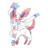
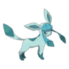
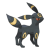

อีวุย (ญี่ปุ่น: イーブイ; โรมาจิ: Ībui; ทับศัพท์: Evui) หรือชื่อภาษาอังกฤษคือ อีวี่ (อังกฤษ: Eevee)
เป็นสายพันธุ์โปเกมอนในแฟรนไชส์โปเกมอนของนินเทนโดและเกมฟรีก สร้างโดยซาโตชิ ทาจิริ ปรากฏครั้งแรกในเกมโปเกมอนภาคเรด
และ บลู และปรากฏในภาคถัดมา เกมภาคพิเศษ สินค้าต่าง ๆ
และการปรับประยุกต์ให้เป็นการ์ตูนและสิ่งพิมพ์ของแฟรนไชส์
อีวุยเป็นโปเกมอนที่สามารถพัฒนาได้หลายร่างตามสภาพนั้นๆและก้อนหินพัฒนาร่างเช่น
ก้อนหินไฟ ก้อนหินไฟฟ้า ก้อนหินน้ำ


